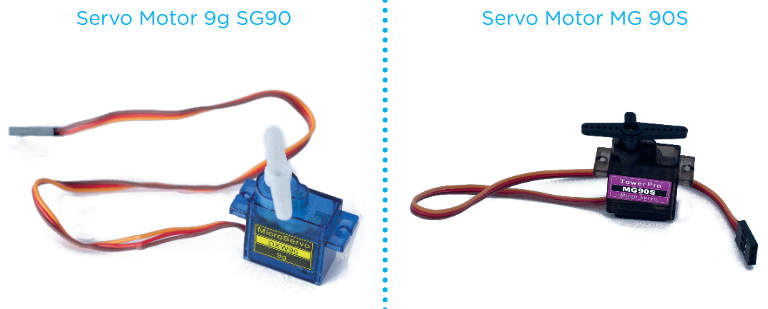
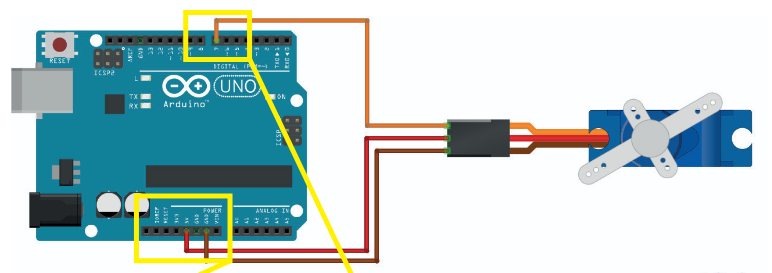
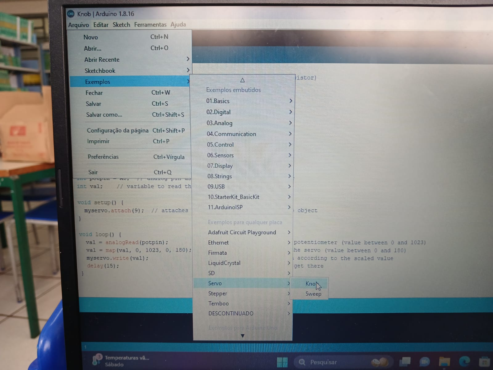
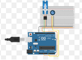
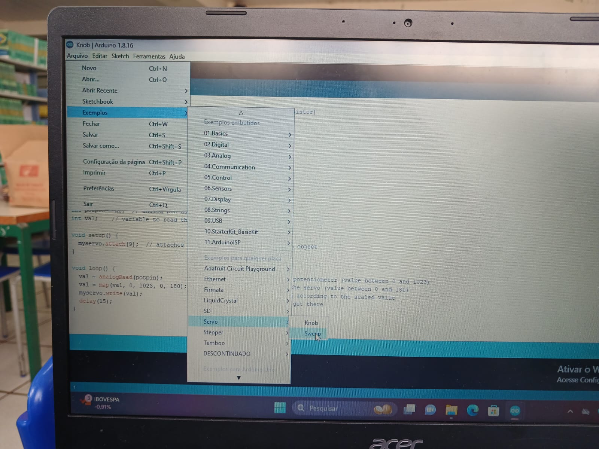

Os Servos Motores são dispositivos que possuem movimento
rotativo proporcional a um comando para atingir a posição desejada
com velocidade monitorada. São utilizados para controlar a posição de
objetos nas áreas industrial, de automação e de robótica.
Há dois modelos de Servo Motor:
o Micro Servo 9g SG90
e o Micro Servo MG 90S. A principal diferença
entre ambos é que o modelo MG 90S possui engrenagens em metal, o
que possibilita maior resistência em relação ao modelo SG90

Os servos motores possuem um
potenciômetro que se encontra ligado ao eixo de saída e é responsável
pelo monitoramento da posição deste eixo; um motor, o qual movimenta
as engrenagens e o eixo principal do servo; um conjunto de engrenagens
cuja função é reduzir a rotação
do motor, transferindo mais torque ao eixo e indicar o
ângulo posicionado com isso podemos fazer movimento de 0° a 360° graus de forma bem especifica.
Os Servos Motores são acionados através de três
fios: marrom (GND), vermelho (5V) e laranja (sinal)

Para programação abrimos o aplicativo do arduino IDE e precisamos baixar uma biblioteca
depois baixamos a biblioteca Servo.h assim podemos programar o servo motor
Agora basta ir em Arquivos depois em Exemplos depois em Servo e finalmente em Knob 
assim vamos ter uma programação de variação de alguns
angulos do servo.
Para controlar o servo motor com um potenciômetro podemos fazer a seguinte ligação

potenciômtro são resistores reguláveis como o proprio servo motor tem em si um potenciômetro podemos controlar qual angulo o servo irá movimentar
Agora novamente basta ir em Arquivos depois em Exemplos depois em Servo e finalmente em Sweep 
Assim teremos um controle para os servos motores, agora tente você adicionar mais servos motores para se fazer um braço Robótico
Segue a programação :